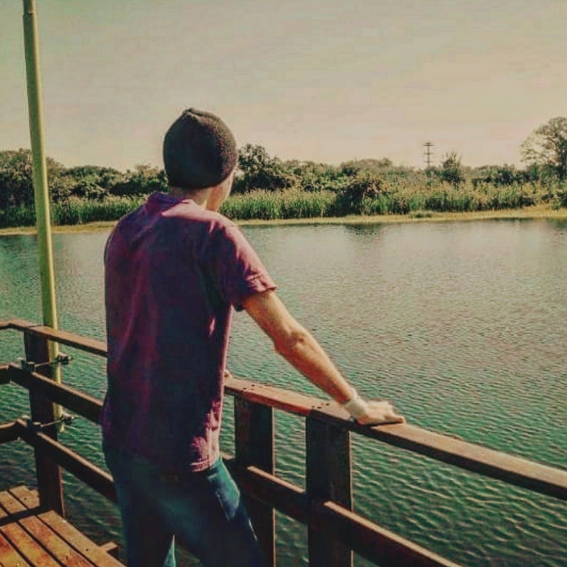

Escuela de Formación Profesional N°7
Datos del alumno Y el Profesor
Alumno:
Avila Marcos

Estudio en la escuela secundaria Pablo Ricchieri N° 54
Es alumno del profesor Mario Fernandez
Tiene 24 Años de edad
Profesor:
Fernandez Mario

Estudió Maestro de Formación Profesional en Instituto de Nivel Terciario de Educación Técnica y Formación Profesional
Actualmente es maestro en el area de desarrollo web Frontend en la E.F.P N°7
Tiene 54 años de edad